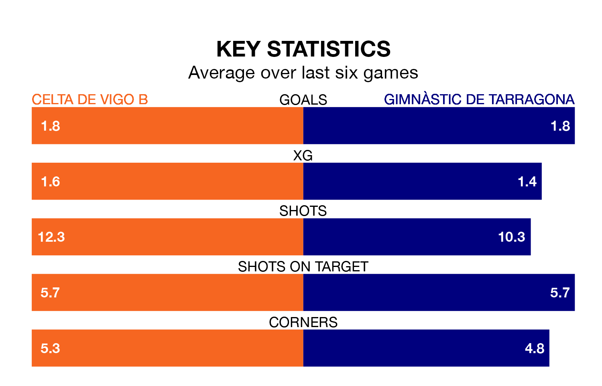

Two of Primera Division RFEF Group 1's top sides face each other at Campo de Fútbol Municipal de Barreiro in Sunday's late kick-off, when table-topping Celta de Vigo B host fourth-placed Gimnàstic de Tarragona.
Celta have picked up 12 wins and two draws from 18 games so far this season, and sit six points above the visitors going into the 6pm match.
Gimnàstic de Tarragona, meanwhile, have won nine and drawn five, picking up 32 points.
With 33 goals in 18 games so far this season, Celta are the league's highest scorers with 1.8 goals per game. And they are conceding at an average rate, letting in 19 goals at a rate of 1.1 per game.
Gimnàstic de Tarragona are also above average scorers, with 1.2 goals per game, compared to a league average of 1.1. They have conceded 0.6 goals per game.
In Pablo Durán Fernández, the hosts have the league's most on-form striker so far this season. He has notched one goal in one appearance.
The away side's top scorer, with one goal in one game, is Ignacio González Ruiz.
Celta are in fantastic form in Primera Division RFEF Group 1, with five wins and one loss from their last six games.
With four wins and a draw over that period, Gimnàstic de Tarragona's form is slightly worse – they have taken 13 points from 18, compared to Celta's 15.
Celta's last match was on January 2, a 1-0 win against CD Lugo, with Alfonso González Martínez getting the goal for Celta.
Gimnàstic de Tarragona beat UE Cornellà 3-0 last time out, on January 3, with González Ruiz, Jaume Jardi Poyato and Marc Fernández Gràcia on the scoresheet.
Updated: 10:50, 10/01/24